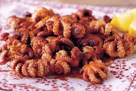

Octupus

I can't understand how people are weirded out by octupus as a dish. I
think it's something really cool and am really looking forward to tasting
it atleast once in my life.
Ingredients (Con que se prepera)
- one or more octupuses.
- oil, grease or maybe even air.
- a whole lot of seasoning.
The Steps
- you should maybe kill it/them first.
- deep fry it/them.
- apply seasoning.